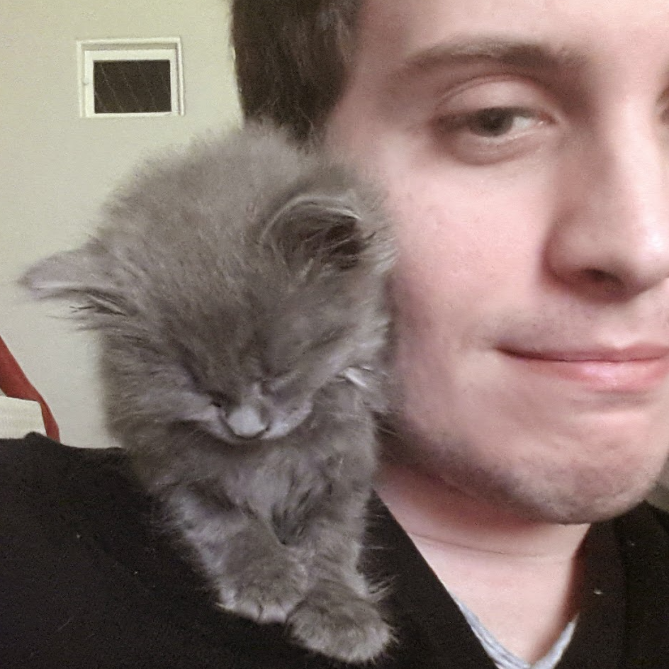

let about_me =
My name is Steven Varoumas, I am a PhD graduate 👨🎓 from Sorbonne University in Paris (where I worked in the team "Algorithms, Programs and Resolution" of the LIP6 computer science lab).
From a young age, I have been quite fascinated with computers and programming, and I am now fond of functional programming (OCaml 🐫, Haskell ƛ, Lisp, Scala ...), and well-versed on object-oriented and/or imperative programming languages (Java ☕️, C, Python 🐍 ...). I also have high interests and expertise in microcontrollers/embedded software programming, compiler implementation, theorem proving and model checking.
My PhD thesis (supervised by Tristan Crolard, Emmanuel Chailloux, and Philippe Trébuchet) was about microcontrollers programming️, for which I was interested in using high-level programming paradigms that are still adapted to the scarce resources of such devices, while providing an expressive model of programming that is simpler and safer than the traditional C/assembly languages often used for embedded systems. I thus implemented an OCaml virtual machine that made it possible to run non trivial OCaml programs on various microcontrollers with less than 8 kB or RAM, as well as a synchronous extension to the OCaml language which simplifies the programming and improves the safety of the concurrent aspects of an embedded system. During my thesis, I also highly enjoyed teaching university students multiple topics of computer science.The manuscript of my thesis, and a list of my publications and talks are accessible on the research section of this website.
I love everything about science 🔬 and new technologies 📱, as well as animals 🦒, reading 📖, and travelling 🗺 (here is a - hopefully growing - map of places I've visited).
I was born-and-raised in eastern France 🇫🇷, moved around in the west for a while, then lived in Paris for about 10 years, and I am currently living in the UK 🇬🇧 where I work as a Research Assistant in the School of Computing of the University of Kent (Canterbury, England).Cheers!
;;